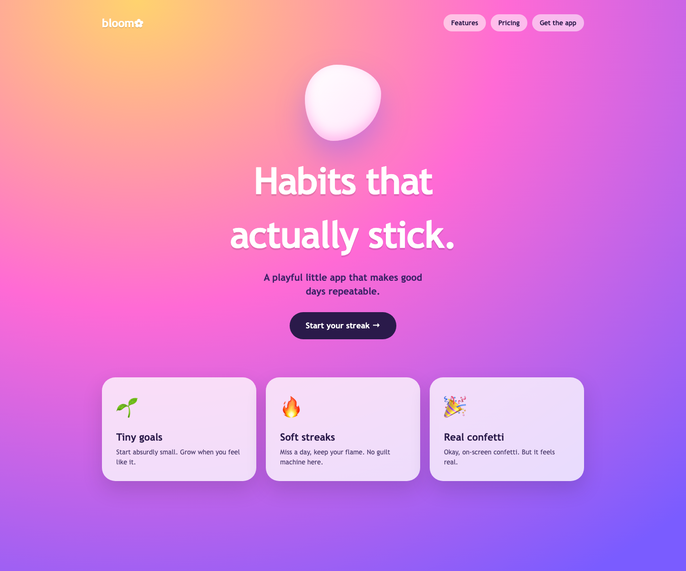
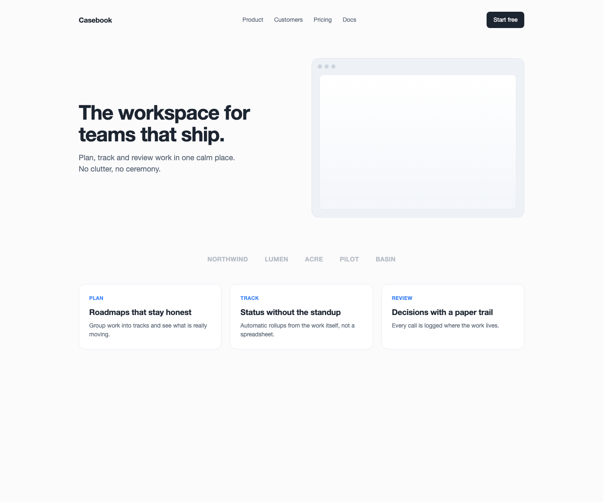
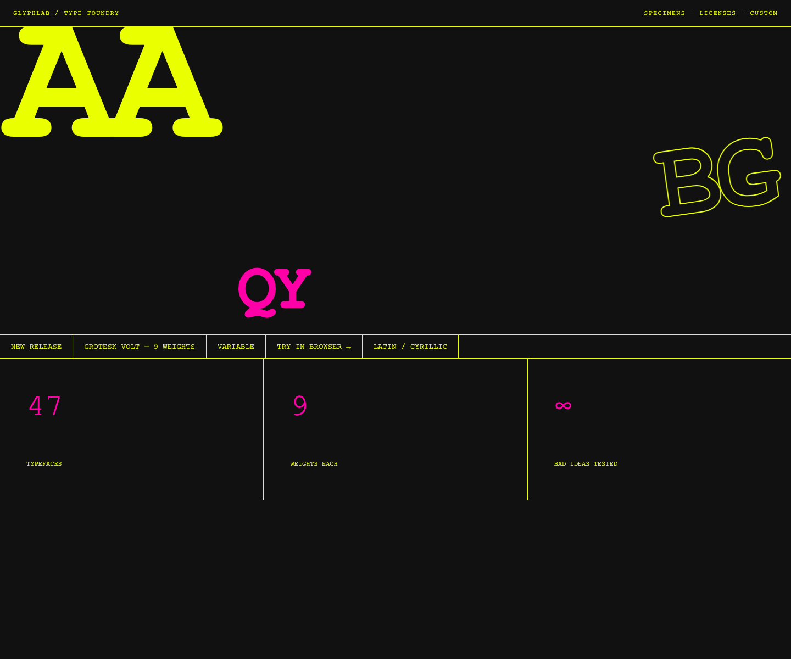
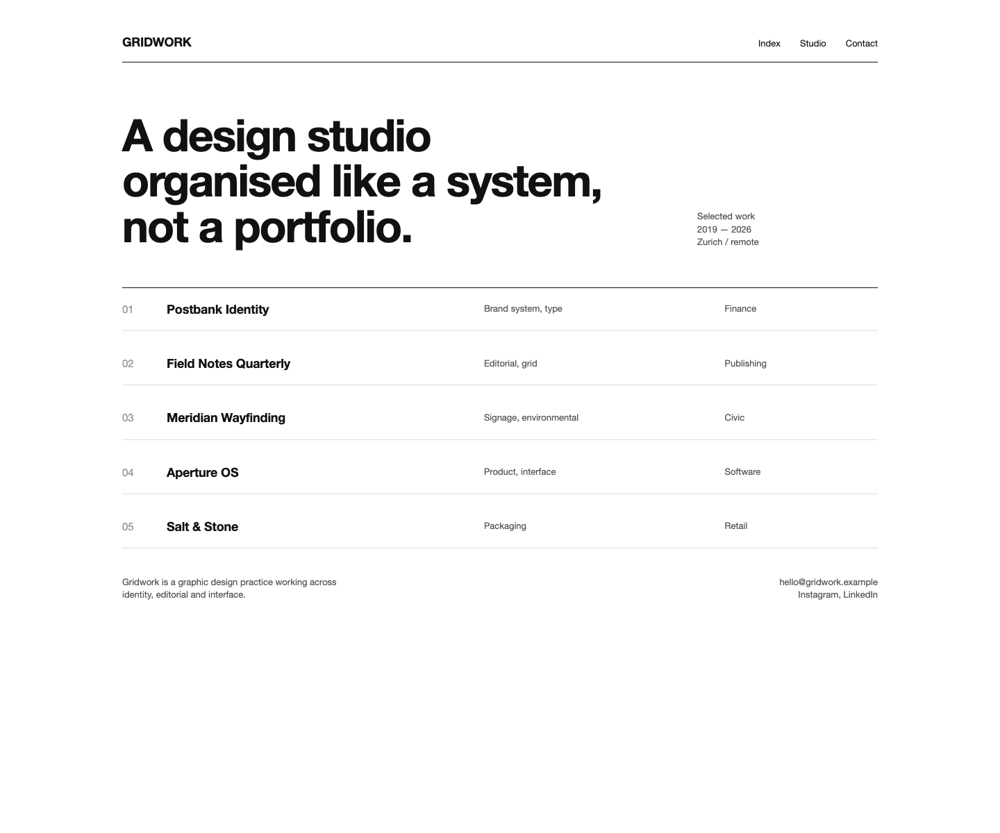
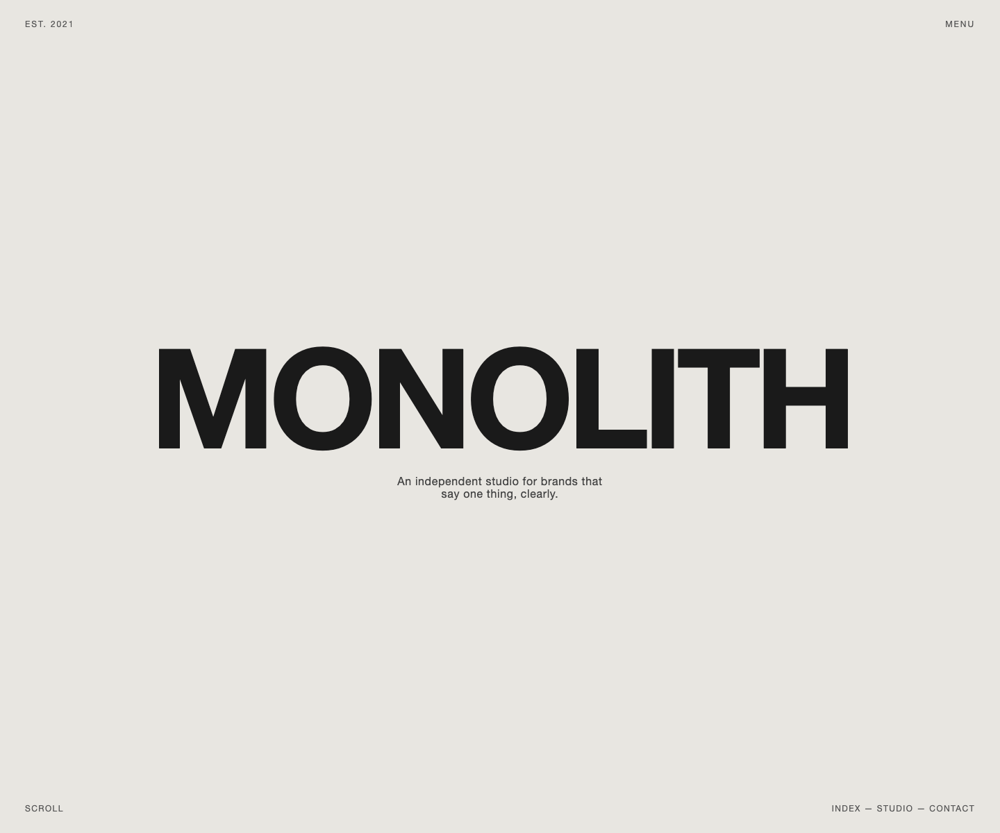
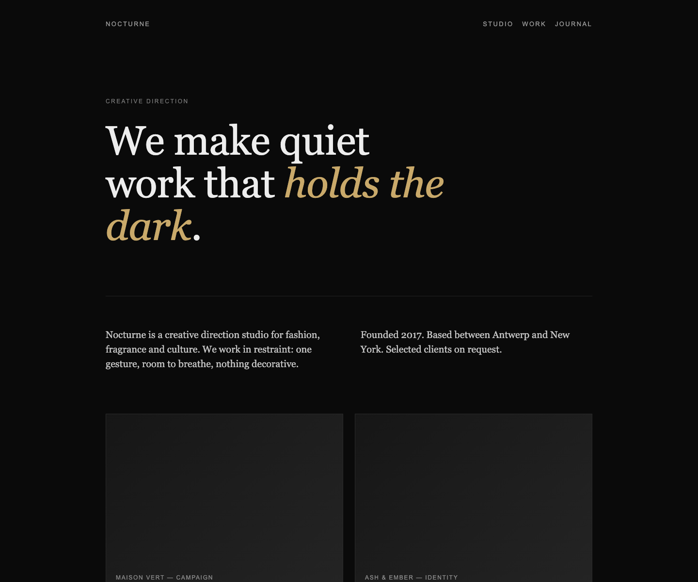
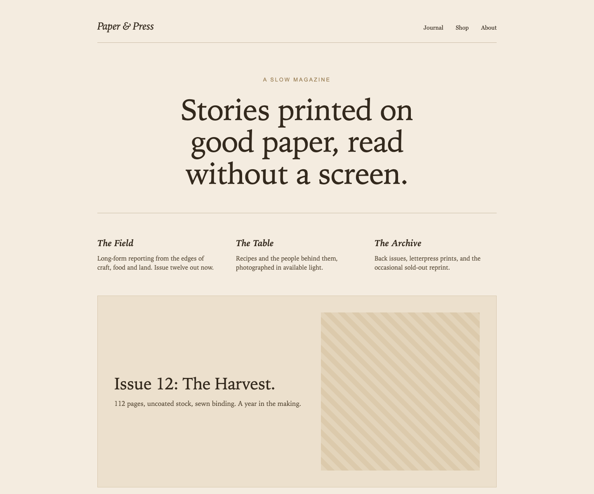
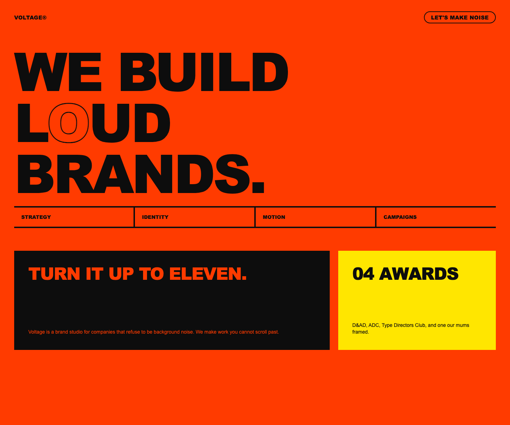

demo
8 references in. 96 rules out, in 4 modes. 0 posters.
1. The board








2. The palette, measured
3. The rule sheet
Edit brief.json to change a rule, lock it or reject it. The next poster obeys the edit.
Swiss Mono Index
A precision-indexed portfolio or catalog site where strict column grids and monospaced type work together, labels, metadata, and category markers feel like a living specification document. The board's heaviest channels combine into a site that is rigorous, cold, and quietly authoritative. White fields, hairline rules, and character-grid spacing leave no room for decoration.
- White or light neutral; clean field with no atmospheric treatment
- Grotesk or mono typeface; type set on strict baseline/column grid; hierarchy via size and weight alone
- Minimal, hairline rules, small numerals, metadata labels; color used sparingly if at all
- Documentary or object photography cropped flush to grid; no bleed chaos
- Structured negative space driven by column math; breathing room is deliberate not accidental
- Functional transitions, fade or slide on axis; no expressive animation
- White, light gray, or cream; ground is neutral enough to disappear behind structured data
- Monospaced typeface throughout or as primary voice; type signals system, code, precision
- Gray scale with one functional highlight; restraint is the aesthetic
- None or minimal; iconography is geometric and constructed
- Character-grid aligned spacing; space feels measured in ems not pixels
- Terminal-style text rendering; cursor blinks; data appears not animates
- Decorative or display typefaces
- Asymmetric blob layouts
- High-saturation color fields
- Overlapping or collaged elements
- Gradient backgrounds
- Centered hero compositions
- Serif editorial typefaces
- Warm or emotive color palettes
- Photography as atmosphere
- Organic or irregular shapes
- Expressive motion or easing
- High-density decorative elements
Monolith Grid
A brand or studio landing page where a single dominant wordmark commands the white field, supported by a strict underlying grid that keeps any secondary content, metadata, a navigation index, a tagline, tightly ordered and subordinate. The board's cream-to-white ground and black type mass anchor the identity; red appears as one restrained accent at most.
- White or light neutral; clean field with no atmospheric treatment
- Grotesk or mono typeface; type set on strict baseline/column grid; hierarchy via size and weight alone
- Minimal, hairline rules, small numerals, metadata labels; color used sparingly if at all
- Documentary or object photography cropped flush to grid; no bleed chaos
- Structured negative space driven by column math; breathing room is deliberate not accidental
- Functional transitions, fade or slide on axis; no expressive animation
- Single dominant ground color, warm off-white, cream, or deep black; no gradients
- Oversized wordmark or logotype as primary visual element; type IS the layout
- One restrained accent or none; palette stays 2-3 tones max
- No photography; illustration or 3D only if subordinate to type mass
- Extreme negative space; generous margins; nothing competes with the wordmark
- Slow, weighted reveal, letterforms settle or scale in; no kinetic distraction
- Decorative or display typefaces
- Asymmetric blob layouts
- High-saturation color fields
- Overlapping or collaged elements
- Gradient backgrounds
- Centered hero compositions
- Multiple competing headlines
- Busy grid of content modules
- High-density navigation bars
- Decorative background textures
- Photography as hero
- Rainbow or multi-hue palettes
Brutalist Case Doc
A work or process showcase that presents documentation with aggressive graphic weight, heavy grotesk at large scale structures each section while underlying logic is strictly evidentiary: process screens, artifacts, and sequenced content blocks. The board's black-and-white ground with a single maximum-chroma red hit makes the site feel like a zine and a report simultaneously.
- White or very light neutral; ground disappears, content is foreground
- Mono or grotesk for metadata, labels, captions; type serves wayfinding not expression
- Sparse and semantic, accent marks state or category, not decoration
- Process screens, artifacts, documentation; imagery is evidentiary not atmospheric
- Structured breathing room between content blocks; layout sequences like a report
- Scroll-driven reveals; content loads in reading order; no theatrical entrance
- Pure black or raw white; no atmospheric treatment, ground is a blank wall
- Heavy grotesk or display sans at aggressive scale; type used as graphic mass
- Single maximum-chroma primary or secondary, red, yellow, electric blue; one color, full commitment
- Avoided or used as raw document; no retouching aesthetic
- Tight or intentionally crowded; space is earned not given; OR extreme emptiness as provocation
- Abrupt cuts, instant state changes, no easing; motion is structural not decorative
- Expressive or decorative typefaces
- Atmospheric background treatments
- 3D or sculptural elements
- High-chroma color fields
- Collaged or overlapping layouts
- Ambient or looping motion
- Soft or warm palettes
- Serif typefaces
- Gradients of any kind
- Rounded corners or soft UI
- Multi-column editorial grids
- Smooth eased transitions
Warm Meta Editorial
A writing-forward or studio journal site where cream and blush grounds carry literary-spaced editorial type, while monospaced labels, datestamps, and category tags introduce a quiet system layer, warmth and precision held in careful tension. The board's pale yellow (#ffffcc), pink tones (#ffcccc, #ff66cc), and off-white palette ground this in softness without tipping into generic pastel.
- White, light gray, or cream; ground is neutral enough to disappear behind structured data
- Monospaced typeface throughout or as primary voice; type signals system, code, precision
- Gray scale with one functional highlight; restraint is the aesthetic
- None or minimal; iconography is geometric and constructed
- Character-grid aligned spacing; space feels measured in ems not pixels
- Terminal-style text rendering; cursor blinks; data appears not animates
- Cream, blush, or warm off-white base; ground radiates softness without being pastel-generic
- Editorial serif or refined grotesk; type set with literary spacing; unhurried reading rhythm
- Warm low-saturation tones; color suggests paper and ink, not screen primaries
- Soft, warm-lit photography or none; images feel tactile, print-adjacent
- Generous margins; whitespace is warmth; layout feels handset not automated
- Gentle fade-ins; no aggressive entrance animations; content arrives calmly
- Serif editorial typefaces
- Warm or emotive color palettes
- Photography as atmosphere
- Organic or irregular shapes
- Expressive motion or easing
- High-density decorative elements
- Cold white or dark backgrounds
- High-chroma neon accents
- Dense information grids
- Hard geometric shapes
- Bold sans-serif display type
- Fast or bouncy motion
4. The posters, checked against the rules
The check is a vision model's second opinion on rules that have a right answer. Whether a poster is good is your call.
No posters yet. Run npm run poster -- --board demo.